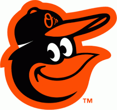
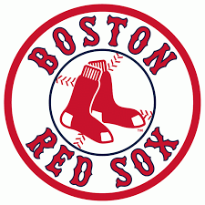
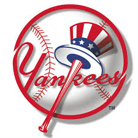

基本架構
MLB
- 美國聯盟
- 東區
- 巴爾的摩金鶯

- 美國職棒大聯盟球隊之一，屬地於美國馬里蘭州巴爾的摩，球隊隸屬於的美國聯盟東區。
自1992年起，主場進駐金鶯公園至今。球隊的名字來源於馬里蘭州的州鳥。媒體常慣稱O's或Birds。
金鶯於1894年創隊，是美國聯盟初創八隊之一，當時球隊根據地為威斯康辛州密爾瓦基，時名密爾瓦基釀酒人。
1902年時，球隊遷移到聖路易，易名為聖路易棕人隊（亦譯為聖路易布朗隊，Saint Louis Browns）。
1954年，球團將球隊再遷移至巴爾的摩，球隊再更名為巴爾的摩金鶯。
- 波士頓紅襪

- 是一支職業棒球隊，隸屬於美國職棒大聯盟的美國聯盟東區。
其主場自1912年後即位於麻薩諸塞州波士頓的芬威球場。
「紅襪」這個名字是在1908年左右由球隊當時的老闆泰勒所取，隊徽也是應此名字而設計。
紅襪隊是全聯盟客場平均觀眾人數最多的球隊之一，而因為芬威球場觀眾人數的限制，使得他們總上座率無法在聯盟名列前茅[2][3]。
但擁有大聯盟滿場最長紀錄，自2003年5月15日至2013年4月10日長達794場滿座，包含季後賽則是820場
- 紐約洋基

- 美國職棒大聯盟球隊之一，隸屬於美聯東區。主場位於紐約的布朗斯區。
媒體慣用簡稱NYY，是美國聯盟八支創始球隊之一。
在1901年球隊初創時，主場位於馬里蘭州巴爾的摩，時名巴爾的摩金鶯，1903年遷至紐約市，易名紐約高地人(New York Highlanders)。
在1913年起，球隊定名為洋基(Yankees)[1]。1923年－2008年，洋基的主場為老洋基體育場，2009年，啟用新的球場新洋基體育場 [2]，
同年洋基即奪得世界大賽冠軍。
紐約洋基是參與最多屆世界大賽(40屆)的球隊，洛杉磯道奇和舊金山巨人以參加過18屆並列第二。
亦是奪得最多世界大賽冠軍(27次)的球隊，聖路易紅雀(11次)次之。
在北美主要之體育項目中，
洋基在1999年獲得世界大賽冠軍以後，超越國家冰球聯盟之蒙特婁加拿大人隊的所獲得的24次史坦利盃冠軍，
成為美國職業運動裡面拿下最多冠軍的隊伍。
在球隊的歷史裡面，有44位的棒球名人堂選手，並且共有16個球隊號碼退休，
這裡面有名的球員包括貝比·魯斯、盧·賈里格、喬·狄馬喬、米奇·曼托和尤吉·貝拉等選手，
而洋基也是在所有的球隊中，唯一每個守備位置皆有球員獲選登錄棒球名人堂中的球隊。
洋基是一個受到大家喜愛和擁有許多球迷的球隊，他們的競爭對手是波士頓紅襪，彼此間的競爭關係延續了一個多世紀，在體育競技的範疇中堪稱世仇。這種情緒和關係在美國職業體育的歷史上非常著名也異常激烈。
YES頻道（YES Network）在2002年成立以後，負責報導洋基的相關新聞。
- 坦帕灣光芒
- 多倫多藍鳥
- 中區
- 芝加哥白襪
- 克里夫蘭印地安人
- 底特律老虎
- 堪薩斯城皇家
- 明尼蘇達雙城
- 西區
- 休士頓太空人
太空人
- 洛杉磯天使
- 奧克蘭運動家
- 西雅圖水手
- 德克薩斯遊騎兵
-
國家聯盟
- 東區